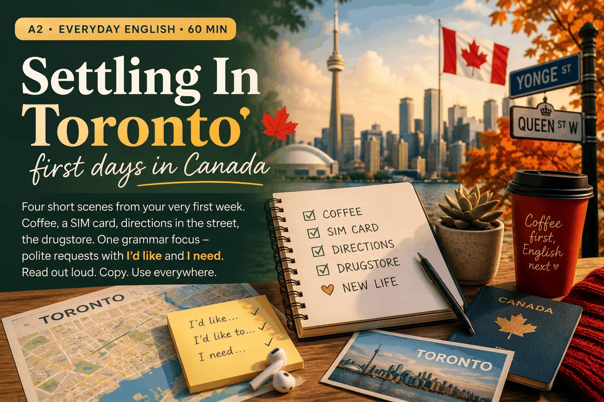
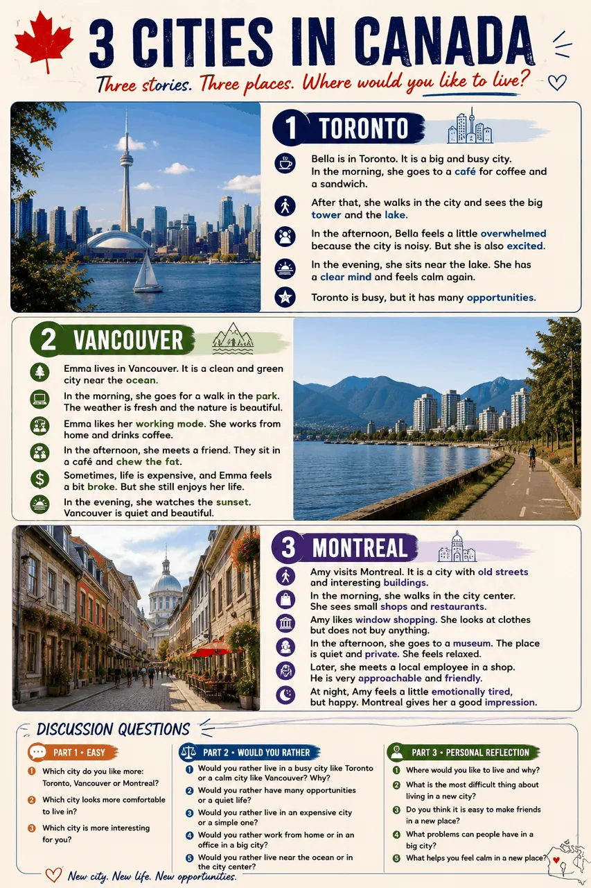
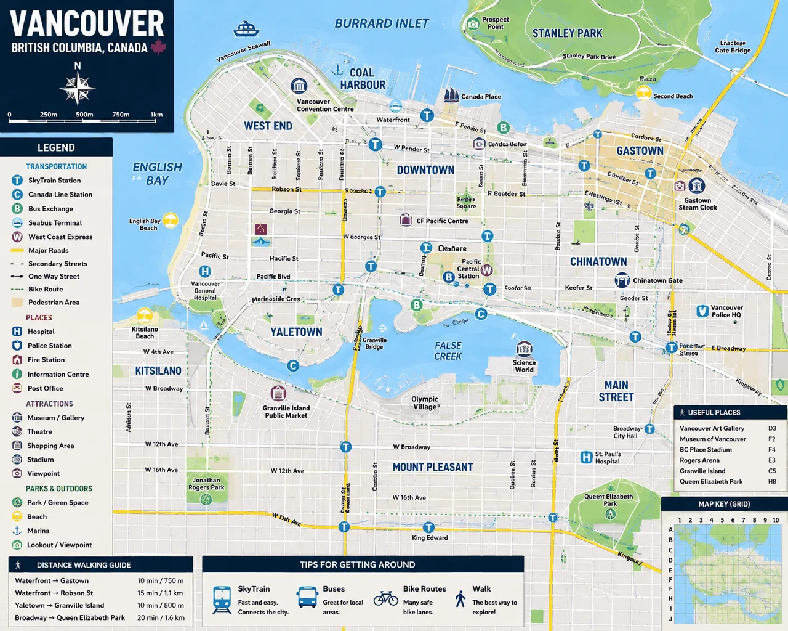
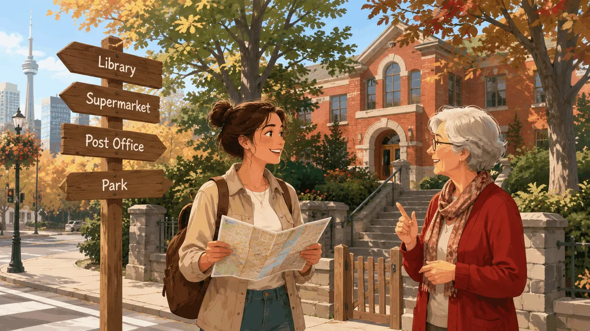
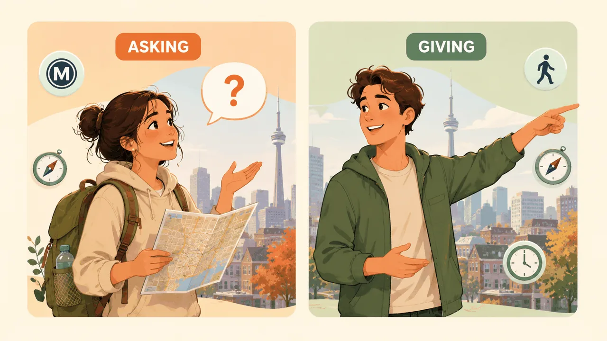
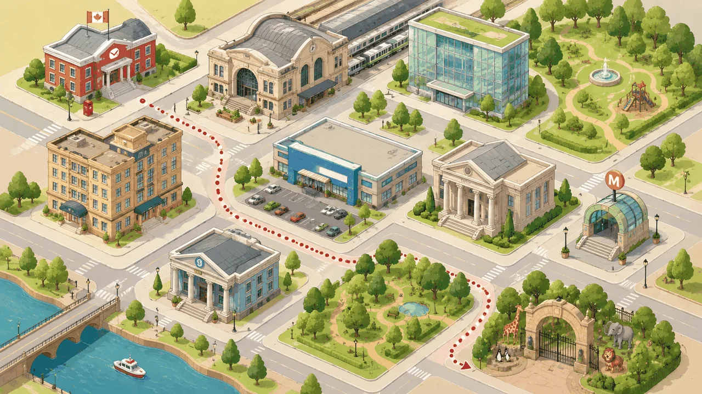
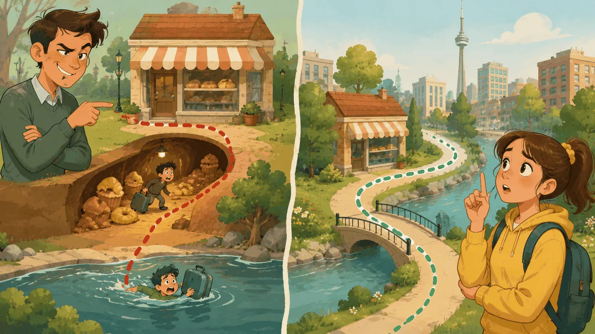
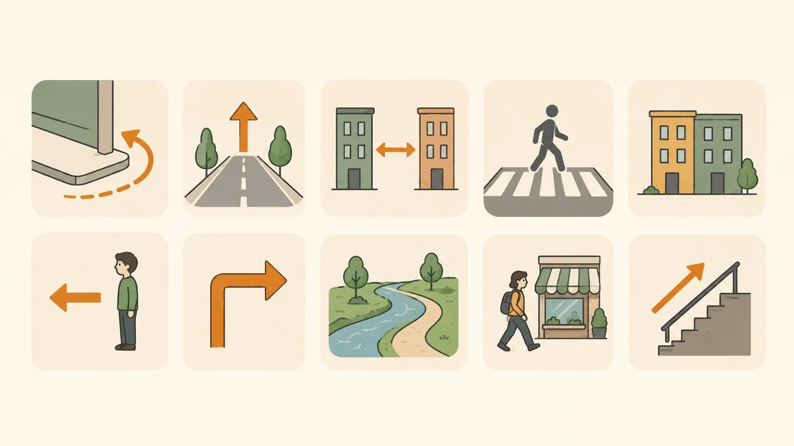

Settling In · first days in Canada · A2 Everyday English · 60 min · coffee, SIM card, directions, drugstore

🍁 Key vocabulary
settle inphrasal v
устраиваться
coffee shopnoun
кофейня
SIM cardnoun
сим-карта
directionsnoun pl
указания
landlordnoun
арендодатель
neighborhoodnoun
район
leasenoun
аренда
subwaynoun
метро
transit passnoun
проездной
downtownadv/n
центр
drugstorenoun
аптека
chillyadj
прохладно
Today's only grammar focus · polite requests
Two structures. Every scene uses them. By the end of the lesson — automatic.
I'd like+ a nounI'd like to+ verbI need+ noun / to-verb
"I'd like a coffee, please."
"I'd like to open a bank account."
"I need some help, please."
1
Three cities · three storiesWarm-up · Speaking
Look at the poster on the left · meet Bella, Emma and Amy · then talk about which life you'd choose

Three women. Three Canadian cities. Three very different feelings.
Read the three stories on the poster. Notice how each woman feels about her city — Bella is overwhelmed but excited, Emma is calm and quiet, Amy is emotionally tired but happy. Each city has a different rhythm. Pick the one that feels closest to YOU.
Part 1 · easy
Which city do you like the most: Toronto, Vancouver or Montreal?
Which city looks more comfortable to live in?
Which city is more interesting for you?
Part 2 · would you rather
Would you rather live in a busy city like Toronto, or a calm city like Vancouver? Why?
Would you rather have many job opportunities or a quiet life?
Would you rather live in an expensive city or a simple one?
Would you rather live near the ocean or in the city centre?
Part 3 · personal reflection
Where would you like to live, and why?
What is the most difficult thing about living in a new city?
Do you think it is easy to make friends in a new place?
What problems can people have in a big city?
Use full sentences. "I'd like to live in…", "I would rather…", "For me, the most difficult thing is…".
🏙
Toronto
East · Ontario
Canada's biggest city. Cosmopolitan, multicultural, busy. The CN Tower, Lake Ontario, four real seasons.
cosmopolitanmulticulturalfinance hub
Good if you like: big-city energy, many job opportunities, every cuisine in the world.
🏔
Vancouver
West · BC
On the Pacific coast. Mild winters, mountains and ocean side by side. Stanley Park, ferries, rain.
mild climateocean + mountainsexpensive
Good if you like: nature within 30 minutes, calmer pace, Asian-Pacific food culture.
🥐
Montreal
East · Quebec
French-English city, European feel, the cheapest of the three. Old Montreal, cafés, festivals all summer.
bilingualaffordablecold winters
Good if you like: European architecture, cheaper rent, arts and music scene.
Now answer aloud — pick ONE city above and use its name in your answer:
Which of these three cities would you like to live in? Why?
What is the first place you want to visit when you arrive?
What do you usually order at a coffee shop?
Use full sentences. "I'd like to live in… because…", "The first place I want to visit is…", "I usually order…".
2
Scene 1 · the coffee shopTim Hortons
Your first morning in Toronto. You order a coffee and a pastry.
☕
You walk into Tim Hortons.It's 8 a.m. Counter is busy. The barista says "Hi, how can I help you?"
Step 1 · Vocabulary
Step 2 · Dialogue · read out loud
Barista: Hi, how can I help you?
You: Hi! I'd like a medium coffee, please.
Barista: Sure. Anything else?
You: Yes, I'd like a blueberry muffin too.
Barista: For here or to go?
You: To go, please.
Barista: That'll be six dollars seventy-five.
You: Here you go. Thank you!
Step 3 · Controlled drill · choose the right word
Step 4 · Your turn · use the template
Order one drink and one snack — your real preference.
Hi! I'd like ____ (size + drink), please.
And I'd like ____ (a snack), too.
____ (For here / To go), please.
Thank you!
Say it out loud three times — first reading, second smoother, third with a smile.
3
Scene 2 · buying a SIM cardRogers / Bell
You need a Canadian phone number. You walk into a Rogers store.
📱
You walk into Rogers downtown.The assistant says "Welcome! What can I do for you today?"
Step 1 · Vocabulary
Step 2 · Dialogue · read out loud
Assistant: Welcome! What can I do for you today?
You: Hi! I'd like a SIM card, please.
Assistant: Sure. Prepaid or monthly plan?
You: Prepaid, please. I need a Canadian number.
Assistant: How much data do you need per month?
You: About ten gigabytes, I think.
Assistant: Perfect. May I see your passport, please?
You: Of course. Here you are.
Step 3 · Controlled drill · choose the right word
Step 4 · Your turn · use the template
Buy a SIM card. Choose your own plan and data.
Hi! I'd like ____ (a SIM card / a phone plan), please.
____ (Prepaid / Monthly), please. I need ____ (a Canadian number / about __ GB).
Here is my passport.
Thank you!
Same routine — three times out loud. Slowly, then naturally.
2
Orientation toolkit · how to find placesSurvival phrases
Three short patterns. Every street question follows one of them. Memorise the shape, not the words.
Three patterns for "I'm lost"
Excuse me, I'm looking for+ placeHow do I get to+ place + from here?Is it far / close?+ direction question
Useful direction words
straightпрямо
turn leftналево
turn rightнаправо
two blocks away2 квартала
across the streetчерез улицу
around the cornerза углом
next to the bankрядом с банком
at the next traffic lightу след. светофора
Short dialogue · finding a pharmacy
You: Excuse me, I'm looking for a pharmacy.
Stranger: Go straight for two blocks, then turn left. It's next to the bank.
You: Straight, then left, next to the bank. Thank you very much!
Practise on the real map · Vancouver Downtown
Open the map and try the five real questions out loud. Use the patterns above.

Downtown Vancouver · neighbourhoods + transit
Try these out loud · 5 questions
"Excuse me, how do I get to Stanley Park from here?"
"Where is the nearest SkyTrain station?"
"Is Granville Island far from Downtown?"
"I'm looking for a hospital. Could you help me?"
"Which bus goes to Chinatown, please?"
Bonus · saying you didn't understand (very useful)
"Sorry, could you say that again, please?"
"Could you speak more slowly, please?"
"Could you show me on the map?"
★
Random situation · spin and speakDrill
Click the button · get a random scene · say what you would do. No two are the same.
Each spin gives you a city + problem + who you ask + an opening line template. Read the template, then improvise one or two more sentences.
Press the button below to get your first scenario.
Your opening line
Aim for 10 spins — by the last one your mouth knows the shape.
3
Scene · asking for directionsDowntown
You are lost in downtown Toronto. You stop a friendly stranger.
🧭
You're at King Street, looking for the bank.A woman with a dog is waiting at the lights. You walk up to her.
Step 1 · Vocabulary
Step 2 · Dialogue · read out loud
You: Excuse me, I need some help. I'm looking for the bank.
Stranger: Of course. Which bank?
You: TD Bank, please. Is it far from here?
Stranger: No, it's two blocks away. Go straight, then turn right.
You: Straight, then right. Got it. Thank you very much!
Stranger: You're welcome. Have a great day!
Step 3 · Controlled drill · choose the right word
Step 4 · Your turn · use the template
You're lost. Ask for help, then thank the person.
Excuse me, I need some help.
I'm looking for ____ (the bank / the metro / a pharmacy).
Is it far from here?
(listen to the answer)____ (Straight, then right / Turn left). Got it. Thank you very much!
Practice the repeat-back — it shows you understood.
3a
Prepositions in action · fill the gapsDirections · prep practice
Read the directions dialogue. Drop the right preposition into each gap.

Word bank:through · behind · down · opposite · at · up · along · from · straight
Me: Excuse me, could you help me find the library? I'm new here.
You: "Sure! First, go on this road until you see a supermarket. It's the post office."
Me: "Then where?"
You: "Turn left the traffic lights and walk the park. The library is the red building. You'll need to go a small gate and some stairs."
Me: "Is it far?"
You: "Not at all! It's just the street, about 3 minutes here."
All the phrases on one card. Tap ▶ to hear, repeat aloud.

🙋 Asking
Excuse me, could you help me, please?
How do I get to Central Station?
What's the best way to the museum?
Where's the nearest metro station?
Is it far from here?
How long will it take me?
Is there a bus, or should I walk?
Is this the right platform for…?
🧭 Giving
Go straight ahead.
Turn left at the traffic lights.
Take the second turning to the right.
Walk past the post office.
Go through the park.
It's just round the corner.
It's opposite the bank.
You can't miss it!
3c
7 tourist cards · role-playSpeaking
Pick a card. Ask for directions. Use today's phrases. Aim for 30–40 seconds per situation.

Card 1. You are at the Post Office. Ask how to get to the Train Station.
Card 2. You are near the Park. Ask how to find the nearest Library.
Card 3. You are staying at the Hotel. Ask how to get to the Supermarket.
Card 4. You are at the Museum. Ask the way to the nearest Metro station.
Card 5. You just left the Bank. You want to walk to the Zoo.
Card 6. You are at the Library. Ask how to find the Museum, going through the park.
Card 7. You're at the Train Station and want to get to the Hotel, without crossing the river.
3d
"Wrong directions" game · catch the mistakeActive listening
Read each instruction. Find what's wrong. Suggest a correct version.

Read each instruction. Pick what's wrong. Click reveals the correction.
Useful expressions: turn left / right at… · go straight ahead · next to / behind / in front of / opposite · go past / go along / go across / through · at the corner · on the left-hand side · diagonally across from
3e
Prepositions of place & direction · 10 MCQQuiz
Choose the correct preposition. Auto-check after each answer.

3f
Discussion · "Mapping it out"Speaking · 8 questions
Pick 3–4 questions. Answer in 4–6 sentences each. Use today's vocab and prepositions.
Have you ever gotten lost in a city? What happened? How did you find your way?
What's the most confusing city you've ever visited? Why was it difficult to navigate?
What kind of maps do you use when you travel? Paper map, Google Maps, offline apps?
Have you ever asked a local for directions in English? What phrases did you use?
Which city's public transport system is the most difficult to use, in your opinion? Why?
What's more stressful — missing your stop or taking the wrong turn on foot? Why?
Do you prefer walking or using public transport when exploring a new city?
What would you do if your phone died and you had no map or directions?
5
Scene 4 · at the drugstoreShoppers / Rexall
You have a small headache. You go to a Shoppers Drug Mart.
💊
You're at the pharmacy counter.The pharmacist looks up and asks "How can I help you?"
Step 1 · Vocabulary
Step 2 · Dialogue · read out loud
Pharmacist: Hello! How can I help you?
You: Hi. I have a headache. I'd like something for it, please.
Pharmacist: Of course. Do you prefer pills or syrup?
You: Pills, please. Something simple.
Pharmacist: Try these. One in the morning, one in the evening.
You: Thank you. Where can I pay?
Pharmacist: At the cash desk, on the right.
Step 3 · Controlled drill · choose the right word
Step 4 · Your turn · use the template
You feel a little ill. Choose your own symptom.
Hi. I have ____ (a headache / a sore throat / a cough).
I'd like ____ (something for it / some medicine), please.
____ (Pills / Syrup), please.
Thank you. Where can I pay?
Last template — same rhythm. By now your mouth knows the shape.
5
Scene · at the walk-in clinicDoctor's office
The pharmacy was not enough. The next day Bella has a fever. She goes to a walk-in clinic.
🩺
Bella sits across from the doctor.The doctor looks at her, smiles, and asks: "Hello, what brings you in today?"
Vocabulary
walk-in clinicклиника без записи
feverтемпература
coughкашель
coldпростуда
I don't feel wellмне неOK
it started yesterdayначалось вчера
rest and hot teaотдых и горячий чай
Feel better soon!Поправляйтесь!
Dialogue · Bella at the doctor's
Doctor: Hello, what brings you in today?
Bella: Hi. I have a headache, a sore throat, and a fever. I don't feel well.
Doctor: When did it start?
Bella: Yesterday morning. I took some pills, but it didn't help much.
Doctor: It looks like a small cold. Rest, drink hot tea, take these for three days.
Bella: Could you write me a prescription, please?
Doctor: Of course. Here you are. Feel better soon!
Your turn · the same shape, with your own symptoms
You go to the doctor. Choose your own symptoms.
Hi. I have ____ (a headache / a sore throat / a fever / a cough).
I don't feel well. It started ____ (yesterday / two days ago / this morning).
Could you write me a prescription, please?
Thank you very much.
Three times out loud. The doctor is patient.
6
Scene · calling 911Emergency
On her way home, Bella sees an older man fall on the sidewalk. She calls 911 — the Canadian emergency number.
🚨
Bella is on Queen Street.An older man is on the ground, holding his chest. People stop, but no one acts. Bella takes her phone and calls 911.
Vocabulary
emergencyэкстренная ситуация
ambulanceскорая
policeполиция
fire departmentпожарная
he fell downон упал
consciousв сознании
breathingдышит
Please hurry!Please, скорее!
Dialogue · Bella calls 911
Operator: 911, what is your emergency?
Bella: I need an ambulance, please. There is a man on the street. He fell down.
Operator: Where are you, ma'am?
Bella: I'm on Queen Street, near the post office. The man is holding his chest.
Operator: Is he conscious? Is he breathing?
Bella: Yes, he is breathing. But he looks very weak.
Operator: Help is on the way. Could you stay with him until they arrive?
Bella: Yes, I'll stay. Please hurry.
Your turn · the 4-sentence emergency call
You see an emergency. Calm voice = fast help.
I need ____ (an ambulance / the police / the fire department), please.
There is ____ (a man / a woman / a child)____ (on the street / in the building / by the lake).
I'm on ____ (___ Street, near ___).
____ (He / She) is breathing but ____ (very weak / unconscious / hurt). Please hurry.
Practice slow and clear. In emergencies, slow English is fast help.
★
Would you rather…Discuss · 4 themes
Pick a side · explain why · give one example · when did it happen to you. Two minutes per question is plenty.
Theme 1 · Emotions & control
"Would you rather feel excited or feel calm with a clear mind when you arrive in a new country?"
👉 Why? 👉 One example. 👉 When did it happen to you?
"Would you rather be a little overwhelmed or a bit bored when you travel?"
👉 Why? 👉 One example. 👉 When did it happen to you?
"Would you rather feel confident or just safe and supported?"
👉 Why? 👉 One example. 👉 When did it happen to you?
"Would you rather be emotionally tired after a long trip or physically tired?"
👉 Why? 👉 One example. 👉 When did it happen to you?
Theme 2 · Decisions & money
"Would you rather keep track of your spending all the time or just relax and spend freely?"
👉 Why? 👉 One example. 👉 When did it happen to you?
"Would you rather go bargain hunting or buy something quickly and not think too much?"
👉 Why? 👉 One example. 👉 When did it happen to you?
"Would you rather use cash or share your card details online?"
👉 Why? 👉 One example. 👉 When did it happen to you?
"Would you rather save money or have more opportunities during your trip?"
👉 Why? 👉 One example. 👉 When did it happen to you?
Theme 3 · Social & behaviour
"Would you rather talk to an approachable employee or try to solve everything alone?"
👉 Why? 👉 One example. 👉 When did it happen to you?
"Would you rather ask for help or stay quiet if you feel insecure?"
👉 Why? 👉 One example. 👉 When did it happen to you?
"Would you rather be seen as friendly or as very professional?"
👉 Why? 👉 One example. 👉 When did it happen to you?
"Would you rather make a strong first impression or build relationships slowly?"
👉 Why? 👉 One example. 👉 When did it happen to you?
Theme 4 · Real situations
"Would you rather stay in a situation that feels complicated or leave and start again?"
👉 Why? 👉 One example. 👉 When did it happen to you?
"Would you rather trust a situation that looks a bit misleading or avoid it completely?"
👉 Why? 👉 One example. 👉 When did it happen to you?
"Would you rather act quickly or stop and think, even if you are in a hurry?"
👉 Why? 👉 One example. 👉 When did it happen to you?
Extension · reflect on your choices
Which choices are most important to you and why?
How do these choices shape your travel experiences?
Tell a short story from your life that illustrates one of your decisions.
🎧
Listening practice · three short storiesTravel · work · money
Play once · listen for the main idea. Play again · catch the details. Then answer the five questions out loud.
Listening 1 · man
"The worst day at the airport"
Show transcript
I was in a hurry that day. My flight was delayed, and everything felt chaotic. To be honest, I was already emotionally tired, and then things got worse.
When I arrived at the airport, I realised I had forgotten my wallet. I had no cash, and my phone battery was almost dead. I felt completely overwhelmed. For a moment, I thought the situation was hopeless.
I tried to stay calm and find an employee who looked approachable. Luckily, I found someone who was very supportive and helped me understand my options. Although the situation was stressful, he gave me the required information and explained everything clearly.
In the end, I managed to access my card details online and solve the problem. It wasn't a good day, but I learned that even in difficult situations, you can find a solution if you keep a clear mind.
Why was the man stressed at the beginning?
What problem did he have at the airport?
How did he feel during the situation?
What helped him solve the problem?
What did he learn from this experience?
Listening 2 · woman
"First impression"
Show transcript
I remember my first day at work very clearly. I wanted to make a good first impression, because you never get a second chance to make one.
But everything went wrong. I was late, I was in a hurry, and I had a terrible headache — a real splitting headache. I felt insecure, and I thought my general look was not professional enough.
When I walked into the office, I noticed different personalities. Some people were friendly and approachable, while others seemed distant. I didn't know how to behave.
At lunch, a few colleagues started to gossip and just chew the fat. I didn't feel comfortable joining them, but I tried to stay polite and supportive.
By the end of the day, I realised that the situation was not as misleading as it seemed at first. People were actually quite nice, and I started to feel more confident.
Why was the first day important for the woman?
What problems did she have in the morning?
How did she feel at first?
What did her colleagues do at lunch?
How did her opinion change by the end of the day?
Listening 3 · woman
"Money and decisions"
Show transcript
Last year, I made a financial decision that I still think about.
At that time, I was completely broke, but I still decided to go bargain hunting and even do some window shopping. I thought I would just look around, but I ended up buying things I didn't really need.
A few weeks later, I had to pay a late fee, and I started thinking about taking a loan. That was the moment when I realised I needed to change my habits.
Now I try to keep track of my spending and only use my card details when I really need to. I also make sure I understand the interest before I agree to anything.
This experience gave me a new perspective. It showed me that every financial mistake is also an opportunity to learn.
Why did the woman start shopping?
What mistake did she make?
What financial problem did she face?
What did she change in her behavior?
What did she learn from this experience?
6
Free speaking · pick one scene and tell me about itAI Live Coach
Choose your favourite scene. Talk for about 60 seconds. The system listens.
Task: Choose one of today's scenes — coffee, SIM, directions, drugstore. Tell me:
Where you are ("I'm at the coffee shop", "I'm in the pharmacy")
What you want using I'd like or I need
One small detail — size, type, place, or feeling
A polite closing ("Thank you", "Have a good day")
AI Live Coach
Tap Start and speak. You'll see four checkmarks turn green as you cover each point. Re-record as many times as you want. Nothing leaves your browser.
Live speech recognition is not supported in this browser. For the live experience open in Chrome or Edge on desktop. You can type your answer below.
Teacher mirror code----offline
Your four points · live
✓You said WHERE you areI'm at / I'm in / I'm at the…+1
✓You used I'd like or I needtoday's grammar focus+1
✓One small detailsize / type / colour / time+1
✓Polite closingthank you / have a good day+1
--:--tap to start · 2:00 max
Words0
Pace · wpm--
Longest pause0s
Your score
—/ 4
Press Start. Cover all four points in about 60 seconds. Slow is fine.
Mic doesn't work? Type your answer instead
Done. Your mouth now knows the shape.
This is exactly how the first weeks in Canada will sound. Same four templates, hundreds of little situations. Next lesson we open the bank account and the apartment viewing — same rhythm.